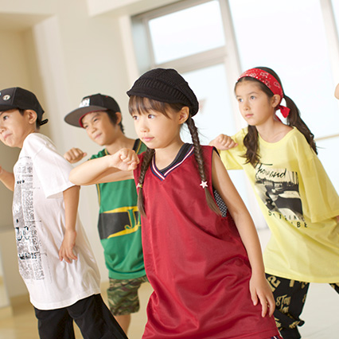
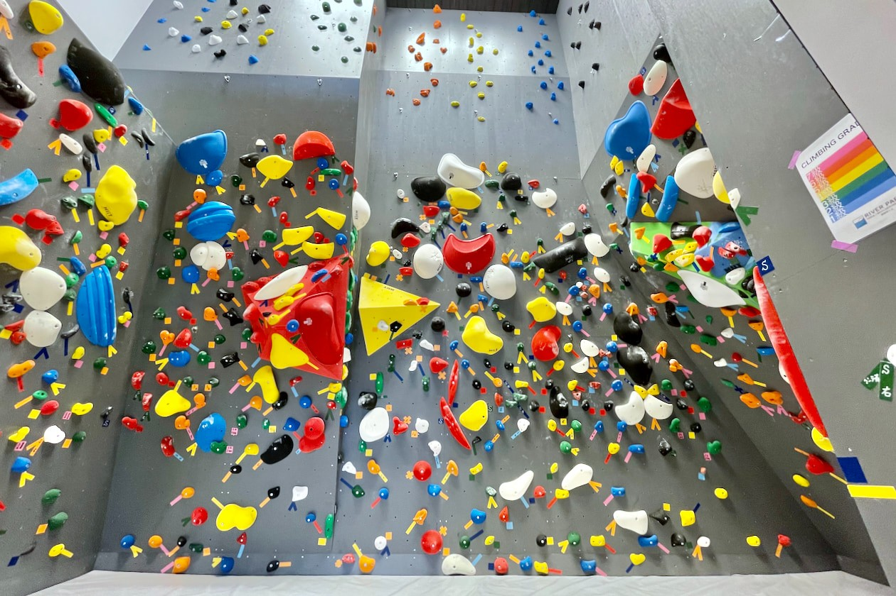
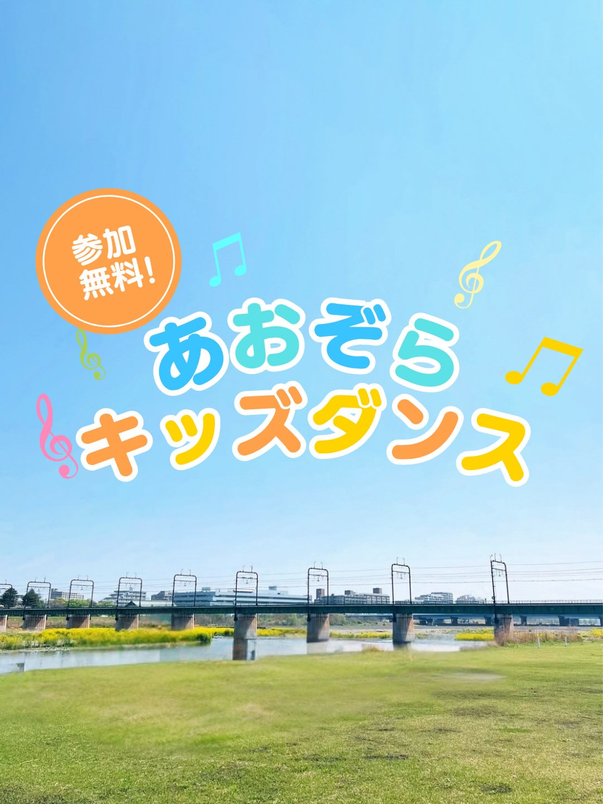

Kids School
キッズスクール
ボルダリングやダンスを通じて、お子様の挑戦する心と健やかな身体を育む
ENVIRONMENT & EFFECTS キッズスクールの環境と心身への効果

安心の1Fジム＆広大な多摩川の自然フィールド
放課後の時間を活用し、1Fの専用ボルダリングジムや目の前に広がる多摩川河川敷の芝生を舞台にレッスンを実施。安全管理の行き届いた開放的な環境でお子様の運動意欲を引き出します。

ボルダリングとダンスを通じた基礎体力づくり
登り方やルール・マナーを楽しく学ぶボルダリングと、音楽に合わせてリズムよく身体を動かすフリースタイルダンス。基礎からステップアップし、身体を思い通りに動かす楽しさを身につけます。

体幹・柔軟性と自己肯定感・協調性の育成
柔軟性・バランス感覚・敏捷性といった運動能力の土台を養うとともに、壁を登り切った成功体験による自己肯定感、仲間を励まし称え合う温かな思いやりの心を育みます。
KIDS MOVIE & INSTAGRAM
動画で見るキッズスクールの笑顔
多摩川河川敷での放課後ダンスレッスン風景や、ボルダリングに挑戦するお子様のインタビュー動画です。